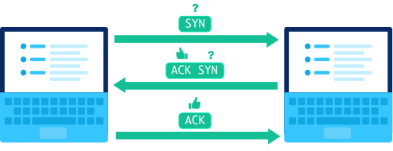

Networks and Data
How do computers talk to each other?
Monday, October 21, 2024
Announcements

AI Summative Project
Lesson Objectives
- Identify the different layers of the network and for what they are responsible.
- Physical network layer
- Application layer
- Understand key protocols involved.
- Transmission Control Protocol
- Internet Protocol
What is a computer network?
- What is Arpanet?
- Who created it? When?
- Why was it created?
- What happened to it?
The Internet
Distributed Packet-Switched Network
- What is the Internet? How does it work?
- Distributed: No central control
- Packet-Switched: Data broken into packets
- What are the connections on the map?
- Why not just use satellites?
- How do we get the cables there? When was the first?
- What is special about this network of networks?
- Redundancy
- Scalability
- Flexibility
Ref: https://blog.telegeography.com/
How do computers talk?

https://www.rtautomation.com/rtas-blog/a-refresher-course-on-osi-tcp-ip/
Physical Layer
- Actual cables and connections
Wired: Ethernet
Wireless
- WiFi
- Bluetooth
- Cellular
- Satellite
How to measure network quality?
- Bit Rate -> Bandwidth
- Latency
- Range
Internet Speed = Bandwidth x Latency
Try Now:
- Speed Test -> Show more info
ping google.comping 1.1.1.1
Internet Protocol (IP) Address
- Unique address for each device
- Parts = Network + specific device
- IPv4: 32-bit address, e.g.
1.2.3.4, 127.0.0.1
- IPv6: 128-bit address, e.g.
2001:0db8:85a3:0000:0000:8a2e:0370:7334
Try Now:
ipconfig
- How many IP addresses does your computer have? Why?
- ifconfig.co
- What is your public IP address? Is it the same as your computer’s IP address?
- Can your online activity be traced back to you?
Which of the following is not a valid IP address?
2001:0db8:85a3:0000:0000:8a2e:0370:7334Bldg 601, Cullum Road, West Point, NY 1099667.243.0.1www.westpoint.eduAA:BB:CC:DD:EE:FF
IP Packet
- Header = letter envelope
- Data = contents
Can an IP packet contain as much data as we want?
How do we transfer large files?
Routing
- Send packets to the nearest router
- Router forwards to the best router based on address
- Final router delivers to destination
Are IP packets always routed using the shortest possible path?
In-Class Activity
ping 1.1.1.1ping 133.3.140.24
- CS Department at University of Kyoto
tracert 133.3.140.24
Protocols
Transmission Control Protocol (TCP)
- Connection-oriented
- Reliable delivery, data integrity ensured
- Email, file transfer
User Datagram Protocol (UDP)
- Connectionless
- Less reliable, but much faster
- Voice/video calls, streaming, gaming
Transmission Control Protocol (TCP) Handshake

Transmission Control Protocol (TCP) Acknowledgement
Next Time: World Wide Web!
- Application Layer!
- Websites!
- Browsers!